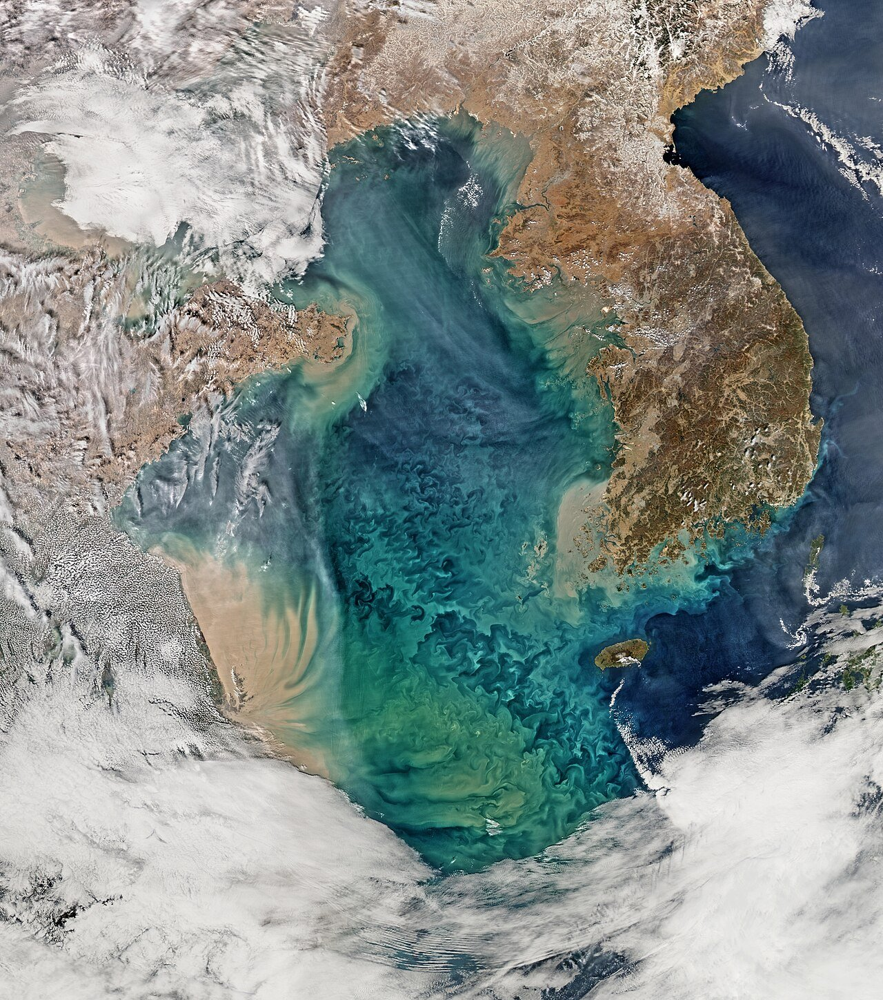
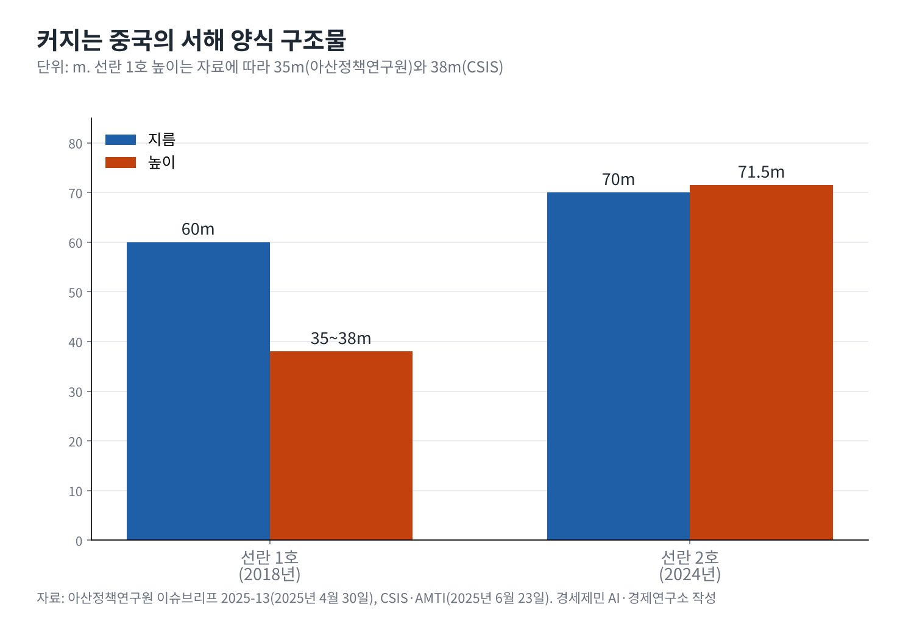
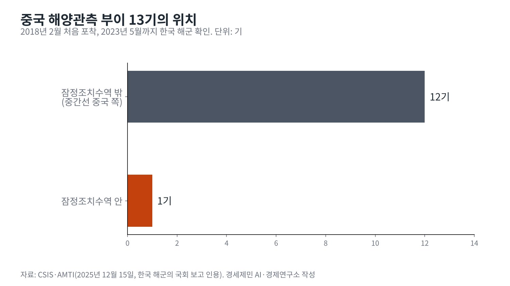

[서해평화 가능한가④] 중국의 속내, 서해를 내해로
「국가급 심해 양식 시험구」와 「새로운 섬」, 중국 매체가 밝힌 구조물의 쓰임
부이 13기·양식장 2기·항행금지, 미국 연구자들 「서서히 스며드는 주권」
중국 외교부 「입장 불변」, 한국은 좌표 공개·환경영향평가 요구·공동 이용 선 긋기 카드
중국은 서해 구조물을 양식장이라고 말한다. 중국 외교부는 2025년 4월 양식 시설이 한중 합의에 어긋나지 않는다고 했고, 2026년 9월 해양협력대화에서도 순수 양식시설이라는 입장을 되풀이했다.
양식장이라는 설명이 거짓이라는 증거는 없다. 연어를 길렀다는 기록도 있다. 그러나 미국과 한국 연구기관들은 양식장 하나보다 그것이 놓인 자리와 쌓이는 방식을 본다. 시설 하나는 작아도 겹치면 관할의 그림이 된다.
중국이 서해에서 관할을 넓히려 한다는 분석은 한국만의 시각이 아니다. 미국과 독일, 인도의 연구기관이 비슷한 우려를 냈다. 중국의 속내를 중국 매체의 말, 바다 위의 시설, 협상장의 원칙으로 나눠 읽는다.
1. 수도로 들어가는 바다
테런스 로릭 미국 위스콘신대 매디슨캠퍼스 연구자는 미국의소리(VOA)에 중국의 시각을 이렇게 설명했다. 중국은 서해를 안보에 결정적인 바다이자 심장부로 들어가는 잠재적 관문으로 본다. 서해는 보하이만을 거쳐 수도권으로 이어진다.

이 바다에서 중국은 해군 활동도 넓혀 왔다. 미국 전략국제문제연구소(CSIS) 연표에는 2025년 5월 중국 항공모함 푸젠함 훈련을 위한 잠정조치수역 항행금지가 기록돼 있다. 같은 달 롄윈강 해사국은 3개 구역의 출입을 막았다.
YTN이 인용한 미국 뉴스위크 분석을 보면 3개 구역의 대부분은 잠정조치수역 안이었고, 1곳은 한국 배타적경제수역(EEZ) 안이었다. 경계가 정해지지 않은 바다에서 중국은 선박의 출입을 정하는 쪽에 섰다.
2. 양식장이 「새로운 섬」이 될 때
CSIS가 인용한 중국 차이나데일리 보도는 이 수역을 중국 최초이자 유일한 국가급 심해 친환경 양식 시험구라고 소개했다. 관리 플랫폼을 두고는 양식장 옆에 새로운 섬을 세우는 셈이라고 썼다.
시설은 커졌다. 2018년 선란 1호는 지름 약 60m, 2024년 선란 2호는 지름 70m, 높이 71.5m다. 아산정책연구원과 CSIS의 수치다. 선란 2호는 연어 100만 마리를 기를 수 있다고 중국 신화통신을 인용한 뉴스위크가 전했다.

섬이라는 말에는 법적 무게가 실린다. 유엔해양법협약(UNCLOS) 제60조 8항은 인공섬과 구조물이 섬의 지위를 갖지 않는다고 정한다. 중국 매체가 섬이라 불러도 국제법상 바다를 나누는 근거는 되지 못한다.
3. 회색지대의 문법, 부이와 해경
양식장만 있는 것이 아니다. CSIS가 인용한 한국 해군의 국회 보고를 보면 중국 해양관측 부이 13기가 2018년 2월부터 2023년 5월 사이 서해에서 확인됐다. 1기는 잠정조치수역 안, 12기는 중간선 중국 쪽 수역에 있다.
일부 부이에는 중국 국유기업 중국전력건설 이름이 적혔다. 중국은 기상 관측용이라고 설명한다. 미국 인도태평양 디펜스 포럼(Indo-Pacific Defense FORUM)도 2018년 뒤 부이 13기와 양식장 2기가 설치됐다고 정리했다.

여기에 해경이 붙는다. 2025년 2월 한국 조사선 온누리호는 구조물 조사 중 중국 해경에 막혔고, 9월에는 15시간 추적을 받았다. 로릭은 회색지대 전략의 목표가 상대에게 새 일상을 받아들이게 하는 데 있다고 설명했다.
빅터 차 CSIS 한국석좌는 이를 「서서히 스며드는 주권」이라 불렀다. 호주 로위연구소의 라만 야콥은 중국이 남중국해에서 쓴 전략을 한국에 쓰고 있다고 VOA에 말했다. 남중국해의 경험이 서해 분석의 틀이 됐다.
4. 협상장의 원칙, 형평과 동경 124도
속내는 협상장에서 가장 분명하게 드러난다. 한국은 양쪽 해안에서 같은 거리인 중간선을 주장한다. 중국은 해안선 길이와 인구를 고려하는 형평의 원칙을 내세운다. 연합뉴스와 인도 마노하르 파리카르 국방연구분석원(MP-IDSA)이 같은 대립을 전했다.
중국은 1962년 북한과 맺은 국경조약을 근거로 동경 124도선을 해양 경계로 주장한다. 코리아중앙데일리와 독일 프리드리히 나우만 재단의 설명이다. 이 선은 한국이 자국 EEZ로 보는 수역을 파고든다.
관리 플랫폼은 1월 27일 잠정조치수역을 떠났다. 그러나 중국 외교부는 기업의 자체 결정이라 했고, 양식 시설에 대한 입장은 그대로라고 밝혔다. 국가 간 약속의 형식을 피하면서 원칙을 지키는 방식이다.
5. 한국의 카드, 기록하고 공개하고 협상하기
아산정책연구원은 어업공동위원회에서 구조물이 어업 질서와 자원에 주는 영향을 다루고, 환경영향평가 자료 공개를 요구하라고 권했다. 유엔해양법협약 제206조는 계획된 활동의 환경 영향을 평가하도록 한다.
CSIS는 한미가 구조물 좌표를 공개하고 미국이 한국의 문제 제기를 지지하라고 권했다. 이재명 대통령은 1월 잠정조치수역 안에도 선을 그어 각자 쓰자는 구상을 밝혔다. 공동관리의 빈칸을 줄이자는 제안이다.
한국 정부는 2025년 상응 조치도 꺼냈다. 강도형 당시 해양수산부 장관은 3월 국회에서 대형 부유물로 상응 조치를 했다고 밝혔고, 4월에는 필요한 시설의 종류와 규모를 정해야 한다고 말했다. 맞대응은 협상력과 긴장을 함께 키운다.
중국이 서해를 하루아침에 내해로 만들 수는 없다. 국제법은 구조물에 섬의 지위를 주지 않는다. 다만 시설과 순찰이 쌓이는 동안 바다의 일상은 바뀐다. 한국의 대응도 시설 하나보다 기록과 공개, 협상을 꾸준히 쌓는 데서 힘을 얻는다.
참고문헌
기관 자료
- United Nations, 「United Nations Convention on the Law of the Sea, Part V Exclusive Economic Zone」(제60조). https://www.un.org/depts/los/convention_agreements/texts/unclos/part5.htm
- Ministry of Foreign Affairs of the People's Republic of China, "Foreign Ministry Spokesperson Guo Jiakun's Regular Press Conference on April 21, 2025", 2025년 4월 21일. https://www.mfa.gov.cn/mfa_eng/xw/fyrbt/202504/t20250421_11600794.html
- Korea.net, "China moves structure in Yellow Sea border row with Korea", 2026년 1월 28일. https://www.korea.net/NewsFocus/policies/view?articleId=286552
- Korea.net, "President Lee proposes solution to sea border row with China"(GlobalSecurity 전재), 2026년 1월 8일. https://www.globalsecurity.org/wmd/library/news/rok/2026/rok-260108-koreanet01.htm
연구 논문과 보고서
- 심상민, 「중국 서해 구조물 설치의 국제법적 검토」, 아산정책연구원 이슈브리프 2025-13, 2025년 4월 30일. https://www.asaninst.org/wp-content/themes/twentythirteen/action/dl.php?id=99052
- Jennifer Jun·Victor Cha(CSIS·AMTI), "Chinese Platforms in the Yellow Sea's South Korea-China PMZ", Beyond Parallel, 2025년 6월 23일. https://beyondparallel.csis.org/chinese-platforms-in-the-yellow-seas-south-korea-china-pmz/
- Victor Cha, "Creeping Sovereignty? China's Maritime Structures in the Yellow Sea(West Sea)", Beyond Parallel, 2025년 12월 9일. https://beyondparallel.csis.org/creeping-sovereignty-chinas-maritime-structures-in-the-yellow-sea-west-sea/
- Jennifer Jun·Victor Cha(CSIS·AMTI), "Chinese Buoys Near the South Korea-China PMZ", Beyond Parallel, 2025년 12월 15일. https://beyondparallel.csis.org/chinese-buoys-near-the-south-korea-china-pmz/
- Jennifer Jun·Victor Cha(CSIS·AMTI), "China Relocates PMZ Structure to Weihai Shipyard", Beyond Parallel, 2026년 2월 2일. https://beyondparallel.csis.org/china-relocates-pmz-structure-to-weihai-shipyard/
- Abhay Kumar Singh, "The Yellow Sea Dispute: Provisional Arrangements and Persistent Deadlock", MP-IDSA Issue Brief, 2026년 1월 22일. https://idsa.in/publisher/issuebrief/the-yellow-sea-dispute-provisional-arrangements-and-persistent-deadlock
- Jaren Lubrano, "China's 'creeping sovereignty' in Yellow Sea", Indo-Pacific Defense FORUM, 2026년 3월 11일. https://ipdefenseforum.com/2026/03/chinas-creeping-sovereignty-in-yellow-sea/
언론 보도
- Christy Lee, "Analysts: China normalizing its claims to maritime zone shared with South Korea", Voice of America(GlobalSecurity 전재), 2025년 1월 23일. https://www.globalsecurity.org/military/library/news/2025/01/mil-250123-voa02.htm
- Baird Maritime, "South Korea sets up floating survey platform to monitor Chinese presence", 2025년 3월 27일. https://www.bairdmaritime.com/security/non-naval-security/south-korea-sets-up-floating-survey-platform-to-monitor-chinese-presence
- Taejun Kang, "South Korea eyes Yellow Sea countermeasure to Chinese structure in disputed waters", Radio Free Asia, 2025년 4월 22일. https://rfa.org/english/china/2025/04/22/china-south-korea-yellow-sea-structure/
- Korea JoongAng Daily, 한중 서해 철골 구조물 분쟁 해설 기사(지면 2025년 4월 30일). https://www.koreajoongangdaily.com/korea/10514945
- Frederic Spohr, "China Expands in the Yellow Sea", Friedrich Naumann Foundation for Freedom, 2025년 5월 13일. https://www.freiheit.org/north-and-south-korea/china-expands-yellow-sea
- YTN, 중국 서해 항행금지구역 설정 보도(뉴스위크 분석 인용), 2025년 5월 23일. https://www.ytn.co.kr/_ln/0134_202505231654362807
- Ryan Chan, "China doubles down on presence in disputed waters", Newsweek, 2025년 10월 23일. https://www.newsweek.com/china-doubles-down-on-presence-in-disputed-waters-10927105
- 뉴시스, "서해 잠정조치수역서 한중 선박 고위험 대치-비욘드 패럴렐", 2025년 10월 28일. https://www.newsis.com/view/NISX20251028_0003379041
- 연합뉴스, "S. Korea seeks progress in talks with China on maritime demarcation, steel structures", The Korea Herald, 2026년 1월 7일. https://www.koreaherald.com/article/10650354
- 해사신문, "한중, 서해 구조물 다시 테이블에…中 '순수 양식시설' 되풀이", 2026년 9월 22일. http://www.haesanews.com/news/articleView.html?idxno=151332
[사진 출처]
- [사진1] NASA/Goddard/Ocean Color, "Yellow Sea, February 24, 2015.jpg", 위키미디어 공용, 퍼블릭 도메인. https://commons.wikimedia.org/wiki/File:Yellow_Sea,_February_24,_2015.jpg
※ 이 기사는 AI 프로그램 클로드를 활용해 작성했습니다.
관련기사
- [서해평화 가능한가①] 중국의 서해 구조물이 노리는 서해 지도
- [서해평화 가능한가②] 모순의 바다, 법적 지위가 충돌하는 서해
- [서해평화 가능한가③] 권력 공백기 노린 중국과 북한의 서해 전략
- [서해평화 가능한가⑤] 북한의 계산, 생존에서 협상력까지
저작권자 © AI경세제민 무단전재 및 재배포, AI학습 및 활용 금지